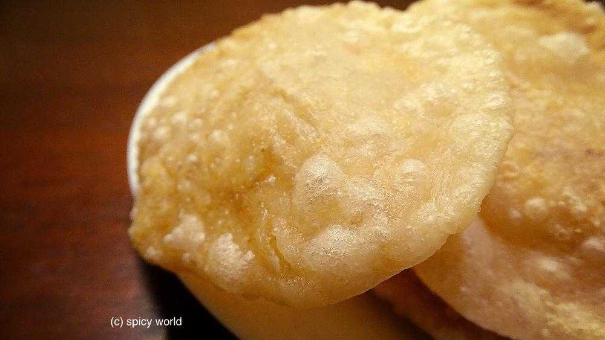
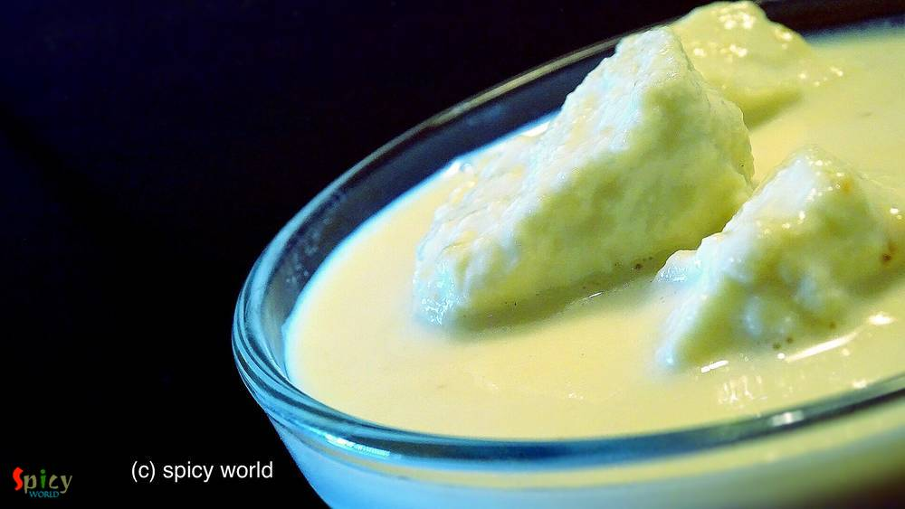

Simple and Easy Recipes

Nonveg Recipe
Nov 2, 2015
Who doesn't love sandwich ? When there is chicken, I am always up for it ?. I make this kind of sandwich in my home oftenly. The taste is kind of Indian spicy but believe me you will love it. One can make many kinds of sandwiches, and this one is my kind. If you have everything in your hand then the process is very simple and easy. You will need 'green chutney' for the sandwich. Make this in your ...


Veg Recipe
Nov 1, 2015
Almost in every Bengali wedding they serve 'radhaballavi' along with 'aloor dom' as breakfast. 'Radhaballavi' is nothing but deep fried puffed bread stuffed with spicy lentil. It tastes even better with spicy curry and 'rosogolla'. There are many varieties of fried puffed bread like 'daalpuri', 'luchi', 'kochuri' etc and this one is also very tasty. Last night I made it along with potato curry and ...

Nonveg Recipe
Oct 28, 2015
Last weekend I made a jar of coriander-mint chutney and kept in for fridge for future purposes. Yesterday 'he' wanted some snacks in the evening and also wanted something new. Usually we serve kababs along with green chutney but I used that green chutney for the marination of the chicken. Believe me it was worth trying and that's the reason I named it 'chutney kabab'.The texture and taste came out ...

Veg Recipe
Oct 25, 2015
This recipe happened by mistake last week. I know what you are thinking!! But I will never regret about this mistake because it turned out delicious. Let me tell you the story first. Last week I took an attempt to make 'sondesh', but the taste came out very less sweeter. I got panicked and immediately called my only life saver 'mom'. She adviced me to follow the process of 'rosmalai'. In rosmalai ...

Nonveg Recipe
Oct 23, 2015
It's always very hard for me to make as usual meal like 'daal, sabji' on weekend. I am sure you will get delicious aroma of spicy dishes from my kitchen almost every weekend. Last weekend 'charcoal' flavour was coming out from a new chicken preparation. Yes, its 'dahi dhuan chicken'. If you like to eat dhaba foods then you will become a fan of this dish. It has a thick rich gravy, nice crunch of o ...
")
Nonveg Recipe
Oct 23, 2015
In Bengali ceremony preparing any dish with fish head is a very good sign. There are plenty of dishes where they use fish head. But 'muri ghonto' is the delicacy of Bengal. I learned this dish from my mom. There are also some variations of muri ghonto. Some uses yellow lentil or flattened rice instead of gobindovog rice. But I prefer this dish what my mom used to make.

Nonveg Recipe
Oct 22, 2015
Nowadays 'kabab' become very popular starter in party menu or restaurant's menu. 'Tangri' means leg piece. When we go to restaurants for dinner, this is our must starter. The taste is completely different from tandoori chicken and you will love it. After today you can make this dish in your own kitchen.

Veg Recipe
Oct 20, 2015
Whenever my tummy craving for sweet snack, Oreo is my first choice. I also love to drink milkshake during summer afternoon. Every friday after returning from office 'he' wants special snacks / drinks. Last friday I made a milkshake with oreo and it was a total hit. Try this in your kitchen and impress your family.

Nonveg Recipe
Oct 20, 2015
During summer we generally avoid to eat rich food. But when it comes to mutton, the decision become difficult ?. For this kind of situation 'mutton stew' is the perfect food for all. The recipe is very simple and have some mild flavours. You will love this when you make it.

Veg Recipe
Oct 19, 2015
I love the sweetness and juiciness of pineapple in summer. Then why not make a milkshake with this one in a hot afternoon?? Believe me you will love this milkshake more than anything ? ...